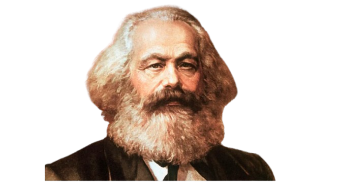
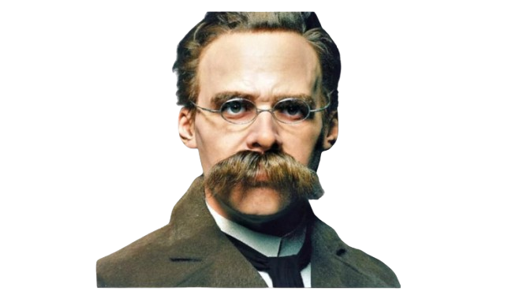
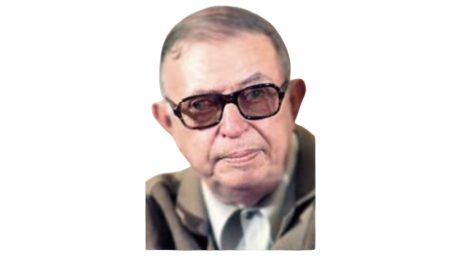

FILÓSOFOS

Karl Marx
(1818–1883)
Fundador del materialismo histórico y el marxismo, analizó la lucha de clases y propuso la abolición del capitalismo.
VER MÁS

Friedrich Nietzsche
(1844–1900)
Filósofo del nihilismo y la transvaloración de los valores, criticó la moral tradicional y proclamó la muerte de Dios.
VER MÁS

Jean-Paul Sartre
(1905–1980)
Principal exponente del existencialismo, defendió la libertad radical del individuo y la responsabilidad en la construcción del sentido de la vida.
VER MÁSMichel Foucault
(1926–1984)
Analizó el poder y sus mecanismos, estudiando cómo las instituciones y el discurso moldean la sociedad y la subjetividad.
VER MÁS